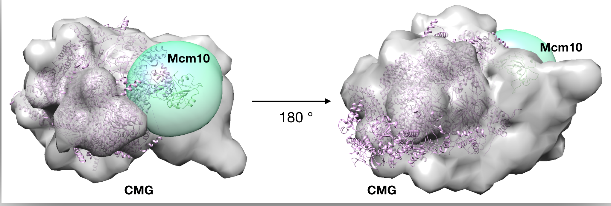
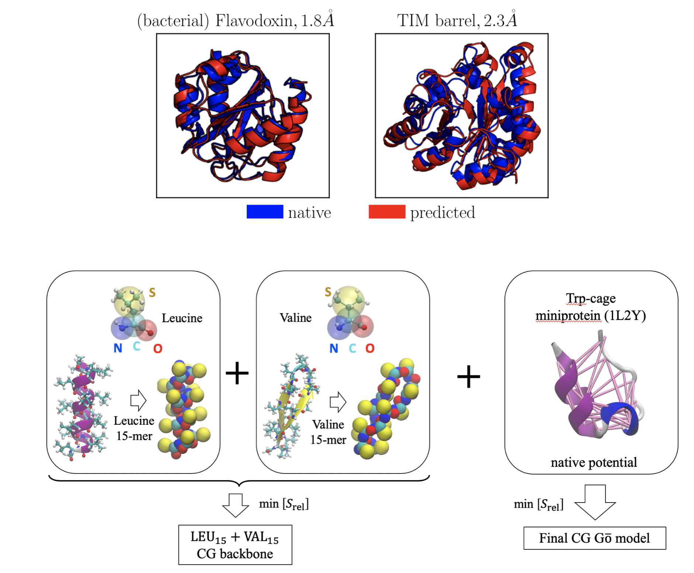
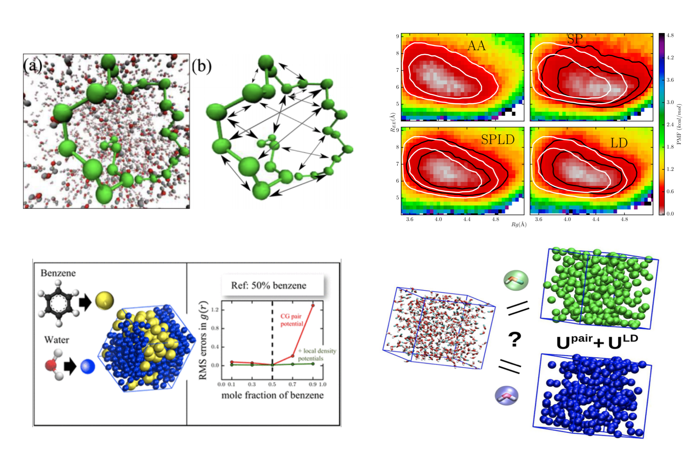

I develop Bayesian inference based methods to understand the effect of model representation choices on the accuracy and precision of protein structure determined from experimental data. In the context of protein structure modeling, representation can be defined as the collection of all decisions that are summarily taken before performing the computationally expensive process of conformational sampling (e.g. using molecular dynamics or monte-carlo methods), such as whether to use atomistic or coarse-grained resolution for the protein residues, what fragments of a protein complexe already have structural informational available and how to best use that information, how to account for multiple metastable states of a protein complex, and so on. I seek formal mathematical ways to pose these questions so that, they are then amenable to Bayesian statistical techniques.
Specificially, I investigate how to best perform rigid fragment decomposition of available structural information (such as from x-ray structures or homology models) such that the number of degrees of freedom is neither too restrictive nor too permissive during monte-carlo conformational sampling.
Collaborators
(2019 - ) Brian Chait, Rockefeller University, New York
(2020 - ) Xiaolan Zhao, Memorial Sloan Kettering Cancer Center
Bayesian meta-modeling is a tentative name for integrative modeling at cellular scales, where available data not only spans different scales, types and experimental protocols, but are also best explained by different submodels. To build the most complete, accurate and precise model for the entire pancreatic beta cell, we try to integrate different submodels as-is (together with data used to parameterize such models) using directed probabilistc graphical modeling. Current efforts are focused on combining massively simplified models of enzyme networks with a meso-scopic (i.e. partlcle based) model of secretory insulin granlues to build a metamodel of glucose-insulin dynamics.
Github repository
(Short tutorial on whole cell modeling using toy sub-models)

Developed simplistic coarse-grained models of hydrophilic and hydrophobic poly-amino acids which can be intelligently combined to produce remarkably accurate backbone models for folding short peptide fragments as well as globular protein domains. This work was a proof of principle for protein backbone models designed from polymers using variational inference methods, and using only native contact based sidechain interactions demonstrated the potential to successfully fold 200+ residue proteins. Possible future directions include combining reduced alphabet and full alphabet sidechain interactions with aforementioned backbone forcefields to produce sequence chemistry dependent protein models.
Collaborators (2017 - 2018): Jeetain Mittal, Lehigh University
A hybrid, bottom-up, structurally accurate, Go-like coarse-grained protein model, Tanmoy Sanyal, Jeetain Mittal and M. Scott Shell, Journal of Chemical Physics, 2019, 151, 044111
Github repository
This repository is a little sketchy; documentation will be updated soon. Also, a substantial part of this code uses the package sim written in Python-2.7. A copy can be obtained through personal request to M. Scott Shell, UCSB.

Developed computationally efficient manybody potentials for improving solvent models in implicit solvent simulations of polymer collapse and liquid-liquid phase separation in coarse-grained binary solutions of small hydrophobes (such as benzene or methanol in water). Depending only on the mean-field local density around solute particles, such potentials signficantly improved predictions of pair structure and clustering behavior of either component across widely varying mixture compositions. This work constitutes some of the very few structurally accurate molecular models of liquid-liquid phase separation in the chemical engineering literature.
Collaborators (2016-2019): Nico van der Vegt, TU Darmstadt
Coarse-grained models using local-density potentials optimized with the relative entropy: Application to implicit solvation, Tanmoy Sanyal and M. Scott Shell, Journal of Chemical Physics, 2016, 145, 034109
Transferable coarse-grained models of liquid-liquid equilibrium using local density potentials optimized with the relative entropy, Tanmoy Sanyal and M. Scott Shell, Journal of Physical Chemistry B, 2018, 122 (21), 5678-5693
Transferability of local density-assisted implicit solvation models for homogeneous fluid mixtures, David Rosenberger, Tanmoy Sanyal, M. Scott Shell and Nico F.A. van der Vegt, Journal of Chemical Theory and Computation, 2019, 15 (5), 2881-2895
Github repository
The local density potential is also available as a pair_style in LAMMPS.(https://lammps.sandia.gov/doc/pair_local_density.html).{:target=”_blank”}